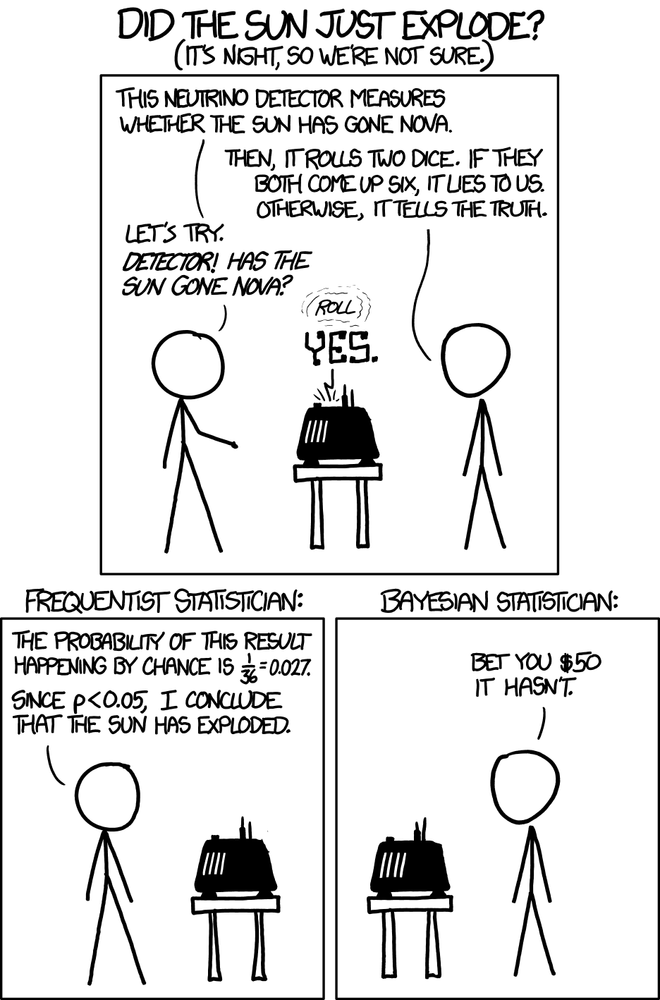
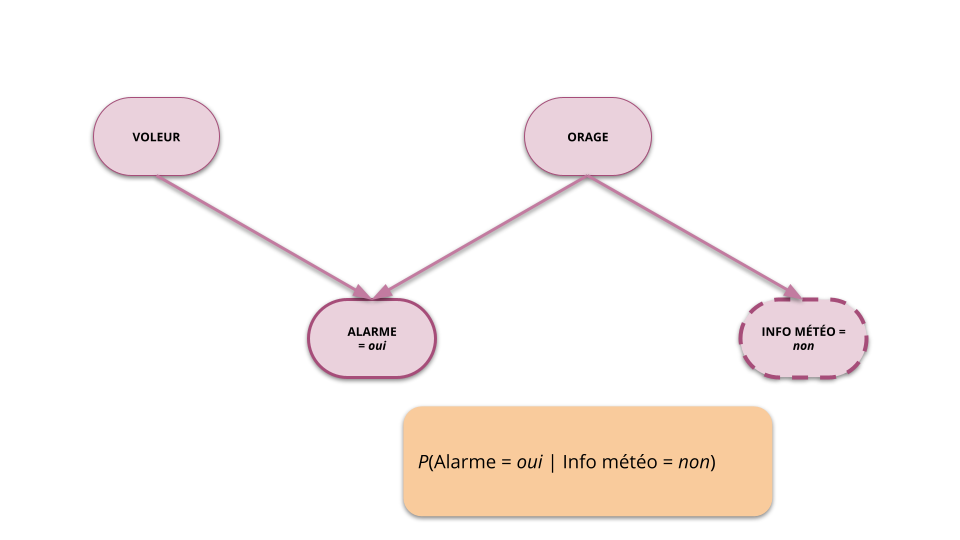

Introduction aux Réseaux Bayésiens
Découverte du formalisme
Roland Donat
BUT3 : Science des Données
Objectifs de la séance
- Replacer le développement des réseaux bayésiens dans l'Histoire scientifique
- Comprendre ce qu'est un réseau bayésien et à quoi cela sert
- Savoir construire un réseau bayésien pour un problème donné
- Découvrir l'outils de modélisation
GeNIe

Un peu d'Histoire

Une histoire de jeux
Révérend Thomas Bayes (1702–1761)
- 1763 : An Essay towards solving a Problem in the Doctrine of Chances
- Notion de probabilité conditionnelle : If there be two subsequent events, the probability of the second \(b/N\) and the probability of both together \(P/N\), and it being first discovered that the second event has also happened, the probability I am right [i.e., the conditional probability of the first event being true given that the second has happened] is \(P/b\).
- Théorème de Bayes

Les travaux se poursuivent…
Pierre-Simon Laplace (1749–1827)
- 1774 : Mémoire sur la Probabilité des Causes par les Événements
- 1812 : Reformulation et clarification des travaux de Bayes

Deux siècles plus tard, les débuts de l'IA
L'ère des systèmes experts (1970-1990)
- Formalisation des connaissances sur un système sous forme de règles déterministes
- Moteur d'inférence reposant sur la logique booléenne
- Déduction d'informations à partir d'une base de règles
- Exemple :
SI X = VRAI ET Y = FAUX ALORS Z = VRAI

Le machine learning ou la renaissance de l'IA
Les réseaux de neurones artificiels
- (McCulloch, Warren S. and Pitts, Walter, 1943) : Premier modèle de neurone artificiel et démonstration que les réseaux de neurones artificiels pouvaient, en théorie, calculer n'importe quelle fonction calculable
- (Rosenblatt, F., 1958) : Invention du perceptron, début de l'apprentissage automatique
- (Rumelhart, David E. and Hinton, Geoffrey E. and Williams, Ronald J., 1986) : Algorithme de rétropropagation (backpropagation) pour l'entraînement efficace des réseaux de neurones multicouches ; début du deep-learning

Le machine learning ou la renaissance de l'IA
Les réseaux bayésiens
- (Pearl, J., 1982) : Création des réseaux bayésiens et premier algorithme d'inférence probabiliste
- \(P(\text{Revenus} > 1500) = 0.3\) et \(P(\text{Abonné salle de sport}) = 0.2\) Alors \(P(\text{Achat chaussures running}) = 0.07\)
- (Pearl, J., 1988) : Amélioration de l'inférence et généralisation à toutes structures de réseaux
- (Murphy, K. P. and Weiss, Y., 2001) : Développement des réseaux bayésiens dynamiques et proposition d'un algorithme d'inférence adapté ces réseaux
- 2011 : Judea Pearl reçoit le Prix Turing

Le machine learning ou la renaissance de l'IA
Les modèles de langages
- (Devlin, Jacob and Chang, Ming-Wei and Lee, Kenton and Toutanova, Kristina, 2019) : Développement de l'algorithme BERT (Bidirectional Encoder Representations from Transformers) permettant de comprendre le contexte des mots dans une phrase.
- (Budzianowski, Paweł and Vulić, Ivan, 2019) : OpenAI publie GPT-2, un modèle de génération de langage avec 1.5 milliard de paramètres.
- 2020 : OpenAI dévoile GPT-3 qui possède 175 milliards de paramètres
- 2022 : Mise à disposition de ChatGPT 3.5 par OpenAI et emballement de l'intérêt mondial pour les modèles de langage
Le raisonnement bayésien

Rappels de probabilités
Variable aléatoire discrète et finie
- Intuition : Une variable aléatoire (v.a.) est une "variable" dont les valeurs possibles sont les résultats d'un phénomène aléatoire
- Un peu plus formellement, une variable aléatoire (v.a.) \(X\) est définie sur un ensemble \(\mathcal{X}\) représentant les résultats possibles d'une expérience aléatoire
- Si l'ensemble \(\mathcal{X}\) est discret et fini, on parle alors de variable aléatoire discrète et finie
Exemples
- \(X\) : "Intensité d'un séisme" avec \(\mathcal{X} = \{[0,3[, [3,7[, [7,\infty[\}\)
- \(Y\) : "L'alarme de la voiture a t-elle sonné ?" avec \(\mathcal{Y} = \{\text{non}, \text{oui}\}\)
Rappels sur les probabilités
Loi de probabilité discrète
- Soit une v.a. \(X\) définie sur le domaine discret et fini \(\mathcal{X} = \{x_{1}, \ldots, x_{N}\}\)
- L'application \(P\) de \(\mathcal{X}\) dans \([0,1]\) définie la loi de probabilité de la v.a. \(X\) si \(\displaystyle{\forall x_{i} \in \mathcal{X}, P(X=x_{i}) \in [0,1]}\) et \(\displaystyle{\sum_{n = 1}^{N} P(X = x_{n}) = 1}\)
- On note alors \(P(X)\) la loi de probabilité de la v.a. discrète et finie \(X\) à valeurs dans \(\mathcal{X}\)
Exemple de loi pour l'intensité d'un séisme
| Séisme \(X\) | Probabilité \(P(X)\) |
|---|---|
| \([0,3[\) | 0.9999 |
| \([3,7[\) | 0.00009 |
| \([7,\infty[\) | 0.00001 |
Interprétation
- Une loi de probabilité permet de quantifier le caractère aléatoire d'une v.a. (i.e. d'un phénomène aléatoire)
Rappels sur les probabilités
Définition
- La probabilité conditionnelle \(P(Y|X)\) représente l'impact de l'occurrence des événements liés à la v.a. \(X\) sur la probabilité d'occurrence des événements liés à la variable \(Y\)
- La loi de la v.a. \(Y\) conditionnellement à \(X\) est définie par \[ P(Y|X) = \frac{P(X,Y)}{P(X)} \]
Exemple : Loi d'une alarme conditionnellement à l'occurrence d'un séisme
| \(P(Y \vert X)\) | Alarme \(Y\) | |
|---|---|---|
| Séisme \(X\) | non | oui |
| \([0,3[\) | 0.999 | 0.001 |
| \([3,7[\) | 0.3 | 0.7 |
| \([7,\infty[\) | 0.05 | 0.95 |
Fréquentistes vs Bayésiens
Fréquentistes vs Bayésiens (la guerre est toujours en cours)
- Fréquentistes : Seules les données ont de l'importance !
- Bayésiens : Les préjugés sont précieux !

Illustration de Christophe Michel, 2018.
Principe général
Principes de la philosophie bayésienne
- L'approche bayésienne repose sur l'utilisation du langage des probabilités pour réaliser des raisonnements
- Cette approche de raisonnement généralise la logique booléenne
- Chaque raisonnement se matérialise par une suite de calculs probabilistes
- Chaque raisonnement tient compte des a priori sur les phénomènes étudiés
- La conclusion d'un raisonnement bayésien est donnée sous la forme d'une loi de probabilité

Exemple de raisonnement
Alarme et vol de voiture
- Situation : J'ai été réveillé par l'alarme de ma voiture en pleine nuit
- Question : Ma voiture est-elle en train de se faire voler ?
Raisonnement de type bayésien
- Mod√©lisation : on liste les ph√©nom√®nes qui pourraient expliquer l'alarme (e.g. fausse alarme, orage, criminalit√©, etc…) et on tente d'√©tablir leur probabilit√©
- Inférence : on réalise des calculs de probabilité pour obtenir la réponse qui nous intéresse, i.e. ma voiture est-elle en train de se faire voler ?
- Décision : si, compte tenu du contexte, la probabilité d'un vol est inférieur à un seuil donné, je me recouche, sinon j'appelle la police
Théorème de Bayes
Théorème de Bayes
- Le théorème (ou formule) de Bayes permet d'exprimer la loi d'un phénomène \(Y\) conditionnellement à
un phénomène \(X\) en fonction de :
- la loi du phénomène \(X\) conditionnellement au phénomène \(Y\)
- la loi marginale du phénomène \(Y\)
- Soient \(X\) et \(Y\) deux variables aléatoires (v.a.) représentant deux phénomènes aléatoires, on a :
\[
P(Y|X) = \frac{P(X|Y) P(Y)}{P(X)}
\]
- les lois \(P(X)\) et \(P(Y)\) sont appelées lois a priori des phénomènes \(X\) et \(Y\) respectivement (ou lois marginales)
- la loi \(P(X|Y)\) représente la vraisemblance du phénomène \(X\) par rapport au phénomène \(Y\), autrement dit la "plausibilité" d'observer \(X\) alors que \(Y\) s'est produit
Conséquence
- Le théorème de Bayes permet d'effectuer des raisonnements probabilistes (de l'inférence) impliquant deux phénomènes aléatoires à l'aide d'a priori et de conditionnement
- Et si la problématique décisionnelle implique plus de deux phénomènes ou variables aléatoires, les réseaux bayésiens vont nous sauver !
Théorème de Bayes
Modélisation
- Fiabilité de l'alarme : \(P(\text{Alarme} | \text{Vol}) = 0.999\)
- Taux de fausses alarmes : \(P(\text{Alarme} | \text{Pas de vol}) = 0.005\)
Théorème de Bayes
Modélisation
- Fiabilité de l'alarme : \(P(\text{Alarme} | \text{Vol}) = 0.999\)
- Taux de fausses alarmes : \(P(\text{Alarme} | \text{Pas de vol}) = 0.005\)
L'alarme retentit üò®... Dois-je appeler la police ?
Je suis fréquentiste (personne n'est parfait) :
je construits un test d'hypothèses :
\begin{cases} H_{0} : & ~\text{Pas de vol} \\ H_{1} : & ~\text{Vol} \end{cases}- Je sais que \(P(\text{Alarme} | \text{Pas de vol}) = 0.005 < 0.05\)
- Il est trop improbable qu'il s'agisse d'une fausse alarme compte tenu de la fiabilit√© de mon alarme, je rejette l'hypoth√®se \(H_{0}\)…
- J'appelle la police !
Théorème de Bayes
Modélisation
- Fiabilité de l'alarme : \(P(\text{Alarme} | \text{Vol}) = 0.999\)
- Taux de fausses alarmes : \(P(\text{Alarme} | \text{Pas de vol}) = 0.005\)
L'alarme retentit üò®... Dois-je appeler la police ?
Je suis bayésien :
- Je dois calculer \(P(\text{Vol}|\text{Alarme})\), i.e. probabilité d'un vol sachant que l'alarme retentit
- D'après le théorème de Bayes : \[ P(\text{Vol}|\text{Alarme}) = \frac{P(\text{Alarme} | \text{Vol}) P(\text{Vol})}{P(\text{Alarme})} \]
- La décision repose donc sur ma "croyance" a priori sur l'occurrence d'un vol représentée mathématiquement par la probabilité \(P(\text{Vol})\)
- Par exemple, si j'habite dans les Bouches-du-Rhône, la probabilité \(P(\text{Vol})\) est plus importante que si j'habite dans la Creuse
Exemple de bayésiens
Question
Vous connaissez tous une industrie qui repose sur les raisonnements bayésiens, laquelle ?
Les réseaux bayésiens

Un exemple pour comprendre
Vol ou pas vol ?
- Replaçons nous dans notre problématique d'alarme et de vol de voiture
- Considérons à présent que notre alarme est sensible aux orages
- Cela se matérialise par une probabilité de fausses alarmes qui augmente avec la présence d'un orage et de son intensité (données constructeurs)
- On suppose également que la survenue d'un orage peut avoir été prévue par les services météo (données sur les performances des prévisions météo)
- La problématique du vol et de l'alarme n'est donc plus bivariée !
L'alarme retentit en pleine nuit... Dois-je appeler la police ?
- Si j'entends un fort orage
- Si avant de dormir, j'ai lu un bulletin météo indiquant que de petits orages risquaient d'avoir lieu pendant la nuit ?
- Que dire sur la météo si je vois un voleur s'emparer de mon véhicule ?
Un exemple pour comprendre

Un exemple pour comprendre

Un exemple pour comprendre

Un exemple pour comprendre

Un exemple pour comprendre

Un exemple pour comprendre

Un exemple pour comprendre

Un exemple pour comprendre

Un exemple pour comprendre

Inférence probabiliste

Introduction à l'inférence probabiliste

Introduction à l'inférence probabiliste

Les réseaux bayésiens en trois points
Qu'est ce que c'est?
- Les réseaux bayésiens désignent un formalisme de modélisation graphique
- Ce formalisme permet de représenter des phénomènes aléatoires complexes sous forme de lois de probabilité conditionnelles
Sur quoi ça repose?
- Théorie des graphes (aspect qualitatif)
- Théorie des probabilités (aspect quantitatif)
En quoi est-ce intéressant
- Formalisme graphique intuitif (facilite la communication)
- Puissance de modélisation
- Puissance de raisonnement par inférence probabiliste
Domaines d'application
Quelques champs d'applications
- Intelligence artificielle
- Biologie, Médecine
- Marketing, Finance
- Sûreté de fonctionnement
- etc…
- Applications à l'aide à la décision en général
Types d'analyses possibles
- Analyse prévisionnelle : Expliquer un phénomène par rapport à son contexte
- Diagnostic : Comprendre le contexte/les causes associé à l'occurrence d'un événement
- Simulation : Étudier un système complexe en générant des scénarios
Relations d'indépendances
RB et indépendances conditionnelles
- Un RB peut être vu comme un codage de relations d'indépendances conditionnelles parmi un ensemble de variables aléatoires
- Attention :
- L'absence d'arc entre deux variables ne signifie pas qu'elles sont indépendantes
- Un arc entre deux variables ne signifie pas toujours qu'elles sont dépendantes
Structures fondamentales
- Les relations d'indépendances dans un RB se déduisent des trois structures fondamentales
suivantes :
- Connexion série : \(X \rightarrow Y \rightarrow Z\)
- Connexion divergente : \(X \leftarrow Y \rightarrow Z\)
- Connexion convergente (ou V-structure) : \(X \rightarrow Y \leftarrow Z\)
Relations d'indépendances

Propriétés
- \(X\) et \(Z\) sont a priori dépendantes
- Si \(Y\) est connue, alors \(X\) et \(Z\) sont indépendantes
- On dit que \(X\) et \(Z\) sont indépendantes conditionnellement à \(Y\)
- Si je connais la valeur de \(Y\), alors l'apport d'informations sur \(X~\) ne modifie pas ce que je sais sur sur \(Z~\) et inversement
Relations d'indépendances
Propriétés
- \(X\) et \(Z\) sont a priori dépendantes
- Si \(Y\) est connue, alors \(X\) et \(Z\) sont indépendantes
- On dit que \(X\) et \(Z\) sont indépendantes conditionnellement à \(Y\)
- Si je connais la valeur de \(Y\), alors l'apport d'informations sur \(X~\) ne modifie pas ce que je sais sur sur \(Z~\) et inversement
Relations d'indépendances
Propriétés
- \(X\) et \(Z\) sont a priori indépendantes
- Si \(Y\) est connue, alors \(X\) et \(Z\) sont dépendantes
- On dit que \(X\) et \(Z\) sont dépendantes conditionnellement à \(Y\)
- Si je connais la valeur de \(Y\), alors l'apport d'informations sur \(X~\) modifie ce que je sais sur sur \(Z~\) et inversement
Complexité d'un réseau bayésien
Complexité d'un RB
- La complexité d'un réseau bayésien correspond au nombre de probabilités nécessaires pour le définir
- Moins il y a d'arcs dans le graphe :
- Plus des hypothèses d'indépendances conditionnelles entre les variables sont posées
- Plus le potentiel de modélisation, i.e. la capacité à représenter des phénomènes complexes
- Plus la représentation par RB est avantageuse du point de vue du stockage, du paramétrage et de la complexité calculatoire
Exercice
Calculer les complexités du modèle "Alarme" avec et sans RB
Outils pour manipuler les RB
Outils graphiques
GeNIe: outil gratuit pour les étudiants et le monde académique sousWindowsetLinux(avecWine)- Exemple : Modèle du réseau bayésien
Alarme
- Exemple : Modèle du réseau bayésien
BayesiaLab: outil payant sousWindowsetLinux
Résumé de la séance
Points clés
- Un réseau bayésien permet de formaliser et réprésenter un phénomène aléatoire sous forme de
graphe :
- Noeuds du graphe = Variables aléatoires
- Arcs entre noeuds = Relations de dépendance
- Les réseaux bayésiens sont intéressants pour les raisons suivantes :
- Lisibilité et interprétabilité des modèles
- Rigueur mathématique
- Fort potentiel de modélisation
Merci pour votre attention !

Bibliographie
Budzianowski, Paweł and Vulić, Ivan (2019). Hello, {It}'s {GPT}-2 Р{How} {Can} {I} {Help} {You}? {Towards} the {Use} of {Pretrained} {Language} {Models} for {Task}-{Oriented} {Dialogue} {Systems}, arXiv.
Devlin, Jacob and Chang, Ming-Wei and Lee, Kenton and Toutanova, Kristina (2019). {BERT}: {Pre}-training of {Deep} {Bidirectional} {Transformers} for {Language} {Understanding}, arXiv.
McCulloch, Warren S. and Pitts, Walter (1943). A logical calculus of the ideas immanent in nervous activity, The bulletin of mathematical biophysics.
Murphy, K. P. and Weiss, Y. (2001). The {Factored} {Frontier} {Algorithm} for {Approximate} {Inference} in {DBNs}.
Pearl, J. (1982). Reverend {Bayes} on inference engines: {A} distributed hierarchical approach.
Pearl, J. (1988). Probabilistic {Reasoning} in {Intelligent} {Systems}: {Networks} of {Plausible} {Inference}, Morgan Kaufmann.
Rosenblatt, F. (1958). The perceptron: {A} probabilistic model for information storage and organization in the brain, Psychological Review.
Rumelhart, David E. and Hinton, Geoffrey E. and Williams, Ronald J. (1986). Learning representations by back-propagating errors, Nature.